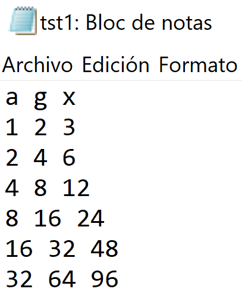
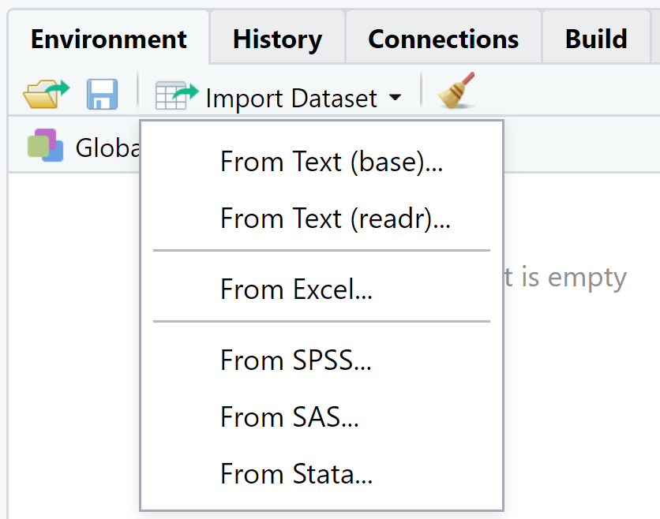

4 Leyendo y creando bases de datos
Hay diferentes formas de escribir datos desde el entorno de R a archivos, y de leer datos desde archivos. Por ejemplo, se crea una base de datos d1 que tiene dos columnas y tres filas, luego esa base de datos se guarda en un archivo tst0.txt y finalmente se vuelve a leer en un objeto d2:
## a b
## 1 3 12
## 2 4 43
## 3 5 54write.table(d1, file="docs/data/tst0.txt", row.names=FALSE)
d2 <- read.table(file="docs/data/tst0.txt", header=TRUE)
d2## a b
## 1 3 12
## 2 4 43
## 3 5 54
4.1 Datos no disponibles (Valores faltantes o missing data)
Cuando se trabaja con datos reales, se pueden encontrar valores faltantes pues la instrumentación falló o porque, por ejemplo, no quería medirse durante los fines de semana. Cuando un dato es no disponible se debe escribir NA en vez de un número.
Calcular estadísticas de un conjunto de datos incompleto es, estrictamente hablando, imposible:
## [1] NASi no le importa tener datos faltantes y quisiera calcular estadísticas, se puede añadir el argumento na.rm=TRUE
## [1] 1.5Los ejercicios realizados anteriormente fueron, en su mayoría, con números. Algunas veces se quiere especificar algo que no es un número, por ejemplo el nombre de una estación de medición o archivo de datos. En estos casos, se requiere que la variable sea un string en vez de un número.
Un objeto en R puede tener muchas clases. Las tres más importantes son numérica, caracter y POSIX (combinaciones fecha-hora).
Se le puede preguntar a R por la clase de un objeto escribiendo class(…).
Caracteres
Para decirle a R que algo es una cadena de caracteres se debe escribir el texto entre comillas, de lo contrario R empezará a buscar una variable definida con el mismo nombre:
## [1] "New York"n <- pears
Error: object pears not found4.2 Leyendo datos de archivos raw, csv, Excel y Stata
Para leer un archivo en formato raw, csv, Excel o Stata, se hace clic en la opción Import Dataset en Environment. Ver la imagen abajo.

From Text (base)(read.table): lee archivos tipo raw
From Text (base)(read_csv): lee archivos tipo csv
From Excel (read_excel): lee archivos de Excel (.xlsx)
From Stata (read_dta): lee archivos de Stata (.dta)
Los comandos pueden ser recuperados de la ventana de Console.
Tarea 8: Crear un archivo llamado tst1.txt en el Bloc de Notas, basándose en el ejemplo de la imagen de abajo y guardarlo en el directorio de trabajo. Escribir un código para leerlo, para multiplicar la columna g por 5 y para guardarlo como tst2.txt.